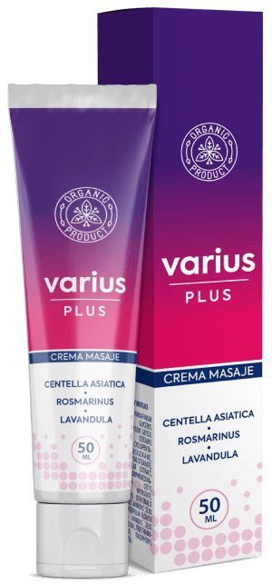

 Por Editor: Según las estadísticas, una de cada cinco personas sufre una enfermedad fúngica en los pies y las uñas. Las razones de su desarrollo varían desde un sistema inmunitario débil hasta la elección incorrecta del calzado y la sudoración. Ya hemos dicho lo grave que es el peligro de los hongos. Y cómo puedes librarte de él de una vez por todas. Jefe del Instituto de Dermatología, Mario Pérez
El miembro de la investigación científica sobre los terapias antifúngicos. Investiga los 3 hongos más comunes: Candida albicans, Malassezia furfur, Trichophyton y Tinea capitis.
Reportero: "Buenos días, Mario Pérez. ¿Qué peligro tienen los hongos en las uñas?"
Mario Pérez: Los hongos en las uñas o la onicomicosis es una enfermedad muy grave que mucha gente ignora. A medida que avanza, el hongo libera grandes cantidades de toxinas en el cuerpo, lo que debilita el sistema inmunitario y a veces lo destruye por completo.
Si hablamos de actuaciones concretas, entonces, en ausencia de terapia, el hongo de las uñas de los pies puede provocar gangrena, cáncer de sangre, putrefacción de la carne de los pies y los dedos, rotura de los vasos sanguíneos. Además, estimula la formación de tumores cancerosos en los órganos de los pacientes, Puede ser en cualquier lugar donde la sangre pueda llevar radicales libres. Y entonces los elementos tóxicos que se forman suelen perjudicar al hígado.
El terapia de los hongos no debe retrasarse. Ignorar la enfermedad puede costar la vida del paciente. Destruye gradualmente el organismo y provoca graves complicaciones.
Reportero: "¿Así que un simple problema de uñas puede poner en peligro la vida humana? "
Mario Pérez: Es un gran error pensar que los hongos de los pies son una enfermedad normal. Es una de las enfermedades más peligrosas y extendidas del mundo, que junto con los procesos ambientales nocivos puede causar gangrena, cáncer, enfermedades relacionadas con la sangre. Estos problemas suelen estar causados por toxinas.
A medida que se desarrollan, las onicomicosis patógenas producen subproductos tóxicos:
- Xantomagnina;
- Penicilina;
- Viomelin;
Sustancias similares a los antibióticos.
Reportero: "¿Cuáles son los primeros síntomas de la onicomicosis?"
Mario Pérez:
Principales síntomas de los hongos en las uñas:
- Grietas entre los dedos (normalmente entre el 1º y 2º, 4º y 5º dedo);
- Espesor de la piel;
- Picazón;
- Enrojecimiento;
- Sensación de ardor;
Grosor, delgadez o fragilidad de la uña
Reportero: "¿Quién puede ser la víctima más frecuente de los hongos en las uñas?"
Mario Pérez: Cualquiera es propenso a padecer hongos en las uñas de los pies y puede ocurrirle a cualquiera, sin excepción. Las personas mayores de 30 años pueden clasificarse como grupo propenso. Hoy en día, dada la velocidad de propagación de los hongos nocivos, Podemos decir fácilmente que se está desarrollando una nueva epidemia en el mundo, comparable a la propagación de la peste en el siglo XIV. Y dadas las graves consecuencias de esta enfermedad, debemos tomar serias medidas preventivas.
Reportero: "¿Qué hacer si alguien es víctima de un hongo en los pies y en las uñas?"
Mario Pérez: ¡Comienza la terapia de inmediato! Sin embargo, lamentablemente, las clínicas suelen utilizar métodos extremadamente bárbaros para tratar a los pacientes: eliminar la placa de la uña por completo con partes contaminadas de los dedos. Y limpiar la zona infectada para limpiar toda la "matriz fúngica". Esto provoca un grave estrés en el organismo. Además, no garantiza que la enfermedad no reaparezca, ya que cierta parte del hongo puede sobrevivir durante la operación.
Este año hemos certificado la crema antifúngica , desarrollada por un equipo de expertos de la Academia de Ciencias junto con los mejores expertos en el campo de la dermatología y la micología de nuestro país y de la Unión Europea. Ahora los que tienen el hongo pueden deshacerse de él de forma rápida y eficaz.
Esta crema neutraliza las esporas del hongo. Influye en toda su colonia, destruyéndola gradualmente. está compuesto por ingredientes vegetales, por lo que es seguro para la salud. Además, evita las recaídas repetidas de la infección fúngica. La comunidad científica cree que es el producto más potente contra los hongos de las uñas y los pies. La crema ha superado con éxito los ensayos clínicos del Instituto de Dermatología de Londres. Confirmaron su eficacia y seguridad. Ahora está siendo certificado en EEUU y China, ¡y con mucho éxito!
Se realizó una encuesta con el apoyo de una fundación científica privada, cuyos resultados superaron nuestras expectativas:
Productos de farmacia:
23%
47%
Remedios caseros:
8%
Estoy buscando una solución:
17%
No creo que sea posible:
5%
Reportero: "¿Y dónde una persona común puede conseguir la crema ?"
Mario Pérez: Este producto no está disponible en las farmacias privadas, pero cualquier persona que padezca la enfermedad puede pedir ahora a través del formulario de pedido oficial del fabricante. Cuando se vende un producto en las farmacias privadas, el problema radica principalmente en que éstas quieren obtener el máximo beneficio por la venta del mismo, mientras que el fabricante quiere entregar el producto al menor precio posible a la gente. La venta ha sido incorporada por la Fundación Benéfica "País Sano", y la "crema " se vende en una empresa conjunta con ellos a un precio reducido. Todos los residentes chilenos podrán comprar con un 50% de descuento hasta el .
Cuando pides el producto por Internet, recibes una carta de confirmación junto con la información de la compra y el producto llega a tu casa en pocos días. El cliente entrega el dinero sólo después de recibir el producto. Todo el servicio se hace con cuidado y para atender al consumidor. También será cómodo y seguro para los que hagan un pedido en línea por primera vez.
Reportero: "Antes de terminar la entrevista, ¿quieres decir algo más?"
Mario Pérez: Me gustaría decir que sólo podemos encontrar la mejor ayuda cuando la buscamos por nosotros mismos. Los hongos en las uñas no son sólo un problema de belleza, sino una enfermedad grave que puede abrir el dedo a la gangrena o al cáncer. Lo mejor es ocuparse de ello antes de que sea demasiado tarde.
¿Puedes decirme cuánto tiempo tardará en llegar?